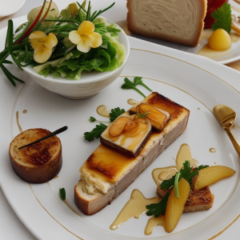
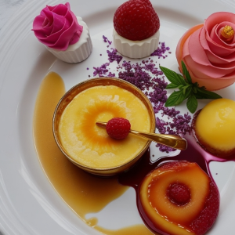
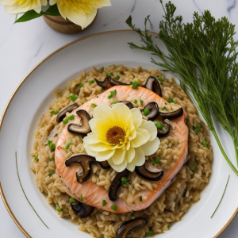
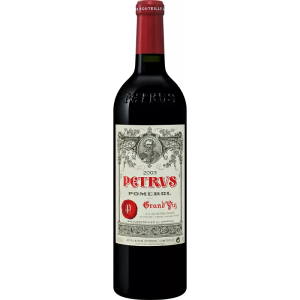
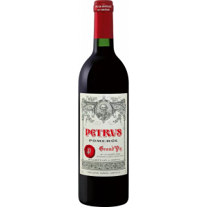
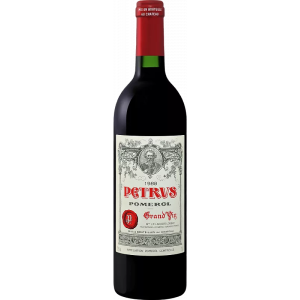

Утка Балета по-провансски с запеченными овощами и картофельным пюре

Фуа - гра Консерватории
Изысканный фуа-гра с деликатным грушевым желе, сопровождаемый тостами с изысканным медом

Лавандовый вальс
Крем-брюле с лавандовым акцентом и малиновым сорбе, который увлечет Ваши вкусовые рецепторы на танец
вкуса и ароматов

Лосось Симфонии
Лосось Симфонии с грибным ризотто и ароматным маслом тартюфов

Вино Petrus Pomerol AOC 2003 0.75л
Рубиновый цвет с пурпурным отливом. Утонченный аромат плавно раскрывается тонами темных фруктов и
ягод, оттененных нотами фиалки и специй. При полном раскрытии проявляются тона трюфеля, сафьяновой
кожи и теплые древесные оттенки. Чистый прямой вкус с прекрасным балансом, гармонией и незабываемым
бархатным послевкусием.

Вино Petrus Pomerol AOC 1997 0.75л
Вино блестящего рубинового цвета. Аромат концентрированный, с тонами шелковицы, засахаренной вишни,
шоколада и специй. Вкус настойчивый, мощный, хорошо текстурированный, с мягкими, зрелыми танинами и
продолжительным послевкусием.

Вино Petrus Pomerol AOC 1988 0.75л
Вино глубокого рубинового цвета. В аромате пряные сливовые, землистые, кокосовые, цветочные и
цитрусовые тона. Во вкусе вино достаточно округлое, гладкое, с долгим ягодно-графитным послевкусием.
Вино Petrus Pomerol AOC 1985 0.75л
Вино блестящего рубинового цвета c ободком кирпичного цвета. В глубоком аромате тона тёмных слив,
земли, трюфелей, кофе. Во вкусе вино хорошо структурировано, один за другим открываются новые грани
вкуса – от сигарной коробки до говяжьего бульона. Гладкие танины и долгий финиш.